Statistical Learning package documentation#
Note
This project is under active development.
The stats_learn package provides a framework to explore statistical learning with a Bayesian focus. See User Guide to get started and stats_learn to explore the API.
A variety of random elements 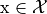 are implemented in the random.elements submodule. Similar to other distributions packages, methods are available for random sampling (sample) and probability evaluation (prob). Additionally, statistics such as the mode and mean can be accessed.
For supervised learning analysis, random models are implemented in the random.models submodule. These models define fixed joint distributions 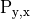 over the observed random elements and the unobserved elements 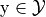. Conditional random elements can be generated with the model_y_x method and used for prediction; furthermore, conditional statistics such as mode_y_x are directly available.
The bayes subpackage implements similar elements/models with parametric representations. Bayesian models define data distributions 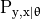 and use a prior 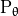 to characterize the model uncertainty. Using observed training data pairs 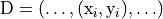, the fit method formulates the posterior 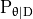 and the resultant Bayesian data model 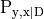.
To deploy statistical models in supervised learning applications, the predictors subpackage provides objects that use these models to define inference and decision functions (fit and predict, respectively). By forming the predictive distribution 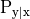 (or 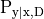 for Bayesian models), these predictors can operate on novel observations 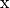 and generate decisions 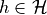 for arbitrary loss functions 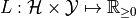. To enable comparison with learning objects from popular machine learning packages, the API allows straightforward customization of predictor subclasses. The predictors.torch submodule uses PyTorch (and PyTorch Lightning) to implement neural networks in the stats_learn API.
The package also includes the results submodule, which provides various functions that enable fair and reproducible evaluations, as well as provide visualizations and Markdown-formatted output. The data_assess function allows evaluation against a fixed dataset; the model_assess function effects Monte Carlo approximation of the expected loss by using a specified model to randomly generate datasets for evaluation. These functions also allow each learner to be assessed over a set of hyperparameter values, performing computationally efficient retraining when possible.